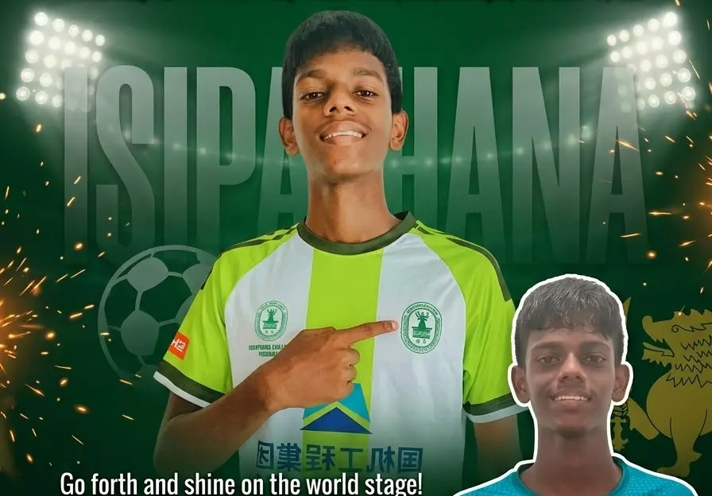
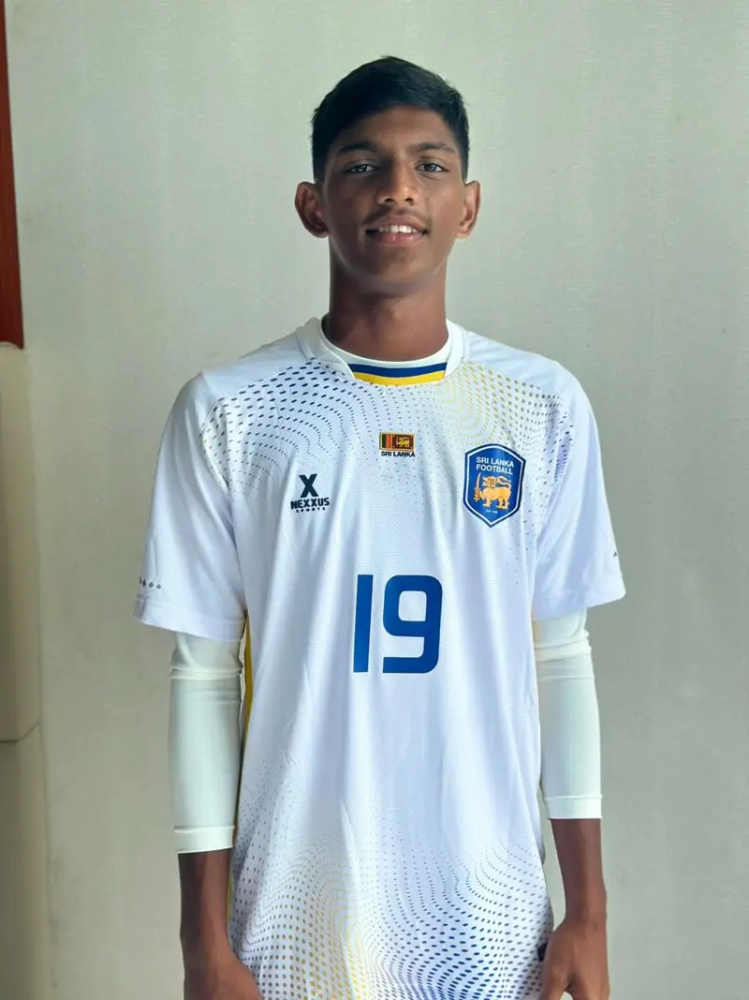
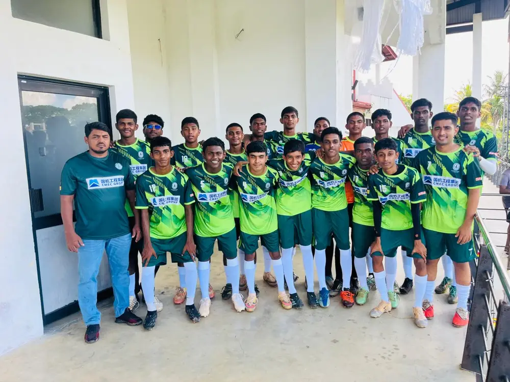

Grade 9
Junior academy entry
- For players seeking entry to Grade 9
- Train with the college squads and coaches
- Football scholarship support for outstanding players*
Isipathana College · Colombo 05
After 20 years, Isipathana returned to the Division 1 National Championship in 2026, and our players are now representing Sri Lanka from Under-15 to Under-20.
Our sponsors 2026


Achievements
Isipathana returned to the Division 1 National Championship in 2026 for the first time in 20 years, finished 3rd in the group stage, and has qualified to play in Division 1 again in 2027.

Selected for the Sri Lanka U-15 squad for the inaugural FIFA U-15 World Cup & Festival 2026 in Baku, Azerbaijan, 22–31 October 2026.

Selected for the Sri Lanka U-20 team for the U20 Asia Cup Qualifiers, after playing for Sri Lanka at the SAFF U17 Championship 2025.

Isipathana won the Shield at our own Under-18 7's tournament at Police Park, beating Wesley College 3–2 on penalties.
Our legacy
Football at Isipathana has always been more than a game. Around the turn of the century, generations of Pathanians made our school one of the strongest football names in Sri Lanka, winning Colombo District titles from Under-14 to Under-18, National Championships at Under-16 and Under-18, the Under-17 title and the Brazil Cup at Under-20. Every squad since has played to honour that standard, and in 2026 the Pathanians returned to Division 1 and to the national jerseys of Sri Lanka.
Player spotlight
Isipathana's number 19 has been selected for the Sri Lanka U20 national team for the U20 Asia Cup Qualifiers, after representing Sri Lanka at the SAFF U17 Championship in 2025. He is one of a growing group of Isipathana players wearing the Sri Lanka jersey.
Videos
Old boys, coaches and players on what the green and white means to them. Videos play from our Facebook page.
Hear it from the Master in Charge of Isipathana College Football
Hear it from the Captain: CMEC – Isipathana College Football 7's 2026
The ultimate showdown is almost here: CMEC – Isipathana College Football 7's
Mr. Manjula Sirisena, former national football player and proud Isipathanian
From the memories of the pitch to inspiring the next generation
Mr. M.A. Abdeen, Isipathana alumnus, on the football community
Gallery
Academy & scholarships
We are looking for skilled, hard-working footballers, especially from outside Colombo, who want to develop their game while continuing their education at Isipathana College.
Selected applicants may be invited to a football trial at the college ground. Parents or guardians are welcome to attend.
Isipathana College is a government school. All admissions, whether to Grade 9 or to the G.C.E. A/L after the O/L, are made only by the Principal of Isipathana College in accordance with the laws, regulations and circulars of the Ministry of Education of Sri Lanka in force at the time, including any approval required from the Ministry or the relevant education authority.
Issued by the Isipathana College Football Development Committee. In the event of any conflict, the decision of the Principal of Isipathana College and the applicable Ministry of Education regulations prevail.
Support Isipathana football
Running school football costs money every season. Donations and sponsorships from old boys, parents and companies pay for what our players need to train, compete and stay in school.
Support skilled players from across Sri Lanka to study and play at Isipathana from Grade 9 and after the O/L.
Qualified coaching, goalkeeper training, fitness sessions and holiday camps for every age group.
Match kits, training wear, boots, balls, bibs and goalkeeper gloves for players who cannot afford them.
Meals and nutrition for players on training days, so no one trains on an empty stomach.
Transport, entry fees and accommodation for school tournaments around the country.
Ground upkeep, goals, nets and medical kits that keep our players safe.
How to give
Transfer any amount to the account below, then send us your payment slip on WhatsApp so we can record your gift and thank you personally.
Any amount helps with kit, meals and travel for the season.
Cover a scholarship player's football and school needs for a term or a full year.
Partner with Isipathana Football for tournaments, kits and the academy, with your brand alongside the team.
Bank account
Please add your name and "Football" as the transfer reference. Donating from overseas? Use a normal international bank transfer with the SWIFT code above (bank: Commercial Bank of Ceylon PLC, City Branch, Colombo, Sri Lanka). Your bank may add a transfer fee.
Use online banking, the app, or deposit at any Commercial Bank branch.
Take a clear photo or screenshot of the slip or transfer confirmation.
Send the slip with your name, phone number and what the gift is for (donation, player sponsorship or company sponsorship).
+94 77 733 1332Contact: WhatsApp +94 77 733 1332 · info@isipathanafootball.com